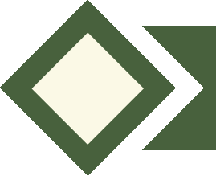
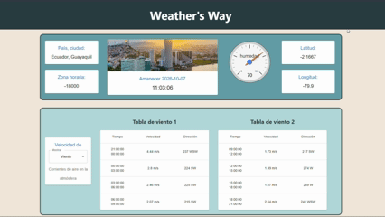
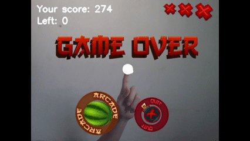

Luis Antonio
Quezada Aristega
Ingeniero en computacion
Ingeniero en computacion

Egresado de Ingeniería en Computación de la ESPOL, cuento con experiencia en:
- Desarrollo de soluciones de software y videojuegos.
- El diseño de base de datos
- La limpieza y preparación de datos.
El desarrollo de videojuegos, el dibujo y la pintura.
Español (Nativo), Ingles (intermedio).
Python, Java, Javascript, Typescript, C#, GDScript y VBA (Excel).
Bachillerato en ciencias
Ingenieria en computación
Se conecta con el API de openweathermap para obtener datos
meteorológicos de Guayaquil, y representarlos con elementos de React
Google Chart.

Creado con Pygame, hace uso de Mediapipe para detectar el dedo indice
del jugador con la cámara y procesar la imagen con Opencv para agregar
los elementos del juego.

- Diseñe la base de datos
- Desarrolle y documente endpoints del backend asegurando un sistema escalable y bien estructurado.
- Implemente traducción mediante archivos JSON, facilitando la modificación de textos.
- Desarrolle un modo contrarreloj con niveles de dificultad, que muestra los 3 mejores récords.
- Implemente un sistema que permite al usuario interactuar con los elementos del video a través de gestos (alear, tocar, agarrar).
- Programé un sistema de detección de mirada para guiar al usuario, mostrarle puntos de interés del video e implementar una interfaz dentro de su campo de visión.